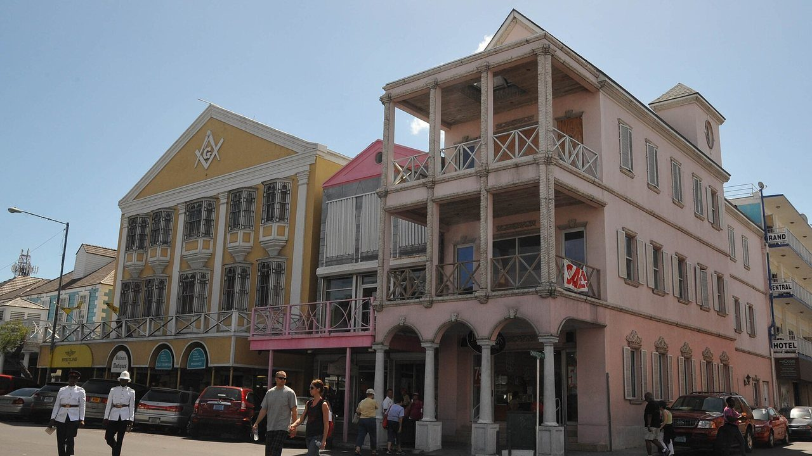

Race, Junkanoo, Nassau

Behind
Best +0:01
371W
Target 418 W-47 W
- Cadence
- 87rpm
- Heart
- 140bpm
- Speed
- 26.5km/h
Recover11 of 22
0:40
Next: · 0:45 at level 24
+0.0%
5 m climbed
7.24 km
10
Resistance / 32
Solo races your best-time ghost: position reads Ahead or Behind, and solo alone gets a Pause button. Frozen at 17:20.